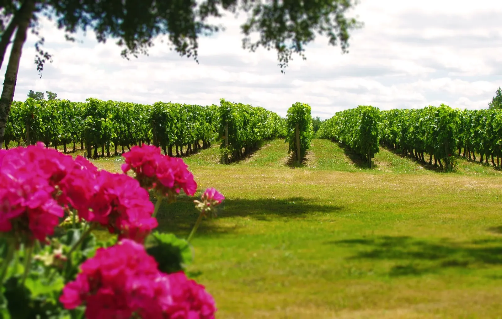
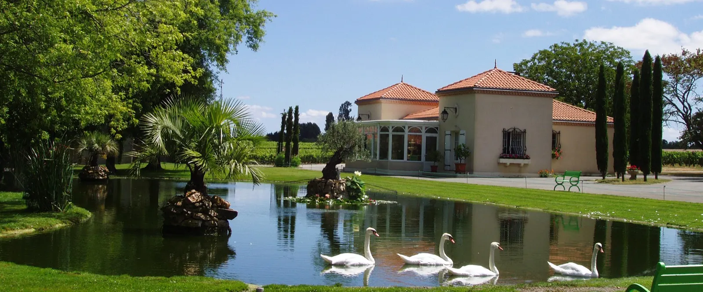
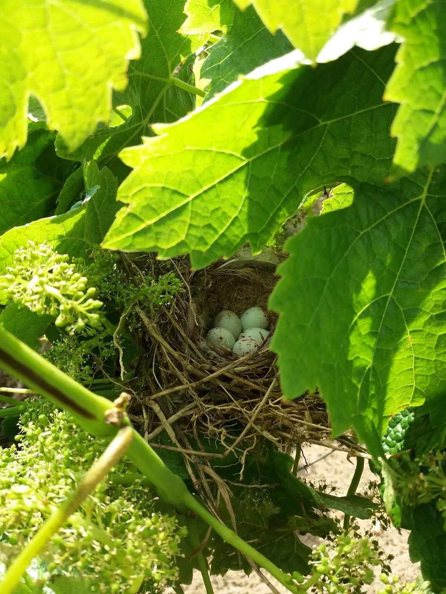
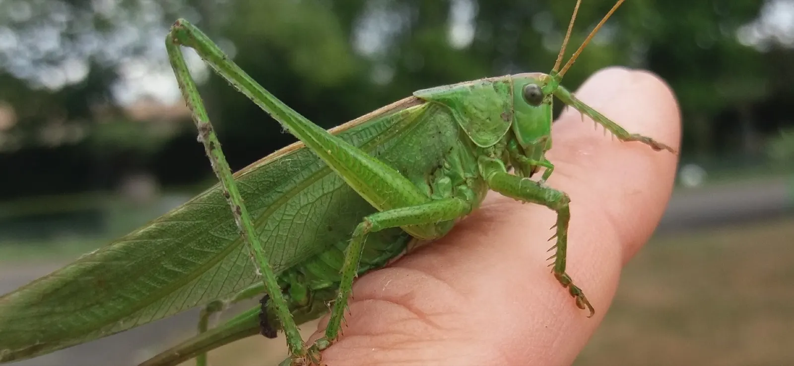
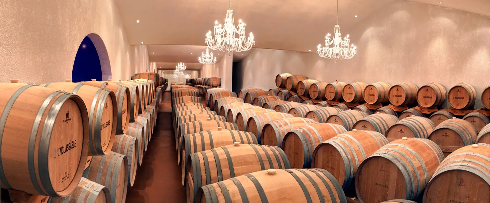
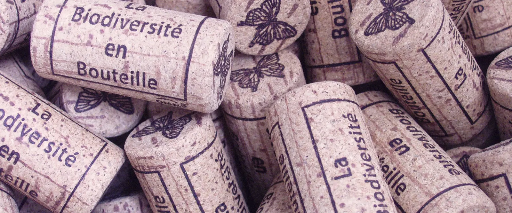
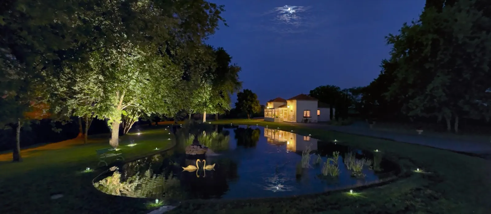

Château L'Inclassable
Un assemblage unique en Médoc, qui met en avant les cépages ancestraux, cabernet sauvignon et petit verdot, élevé en barriques de 400 litres.

Les rangs du châteauDepuis cinq générations, la famille Fauchey cultive le Château L'Inclassable, entre océan Atlantique et estuaire de la Gironde. Haute Valeur Environnementale depuis 2013, végan et bio.
Si vous recherchez un vin standardisé, cloné, sans personnalité, industriel, où l'Homme prend le dessus sur la Nature au lieu de l'accompagner… arrêtez-vous là.
Si vous cherchez un Médoc authentique, qui reflète sa biodiversité et son histoire à travers le plaisir qu'il donne, entrez dans le monde de l'Inclassable.
Au XIXe siècle, le Château L'Inclassable, alors appelé Lafon, était l'un des plus importants domaines de Prignac-en-Médoc. Cinq générations de la famille Fauchey s'y sont succédé, avec la même idée du métier : « Toujours mieux et non toujours plus ».

Le château et son bassinLe domaine est déjà mentionné dans un acte du 26 messidor an IV.
Dans « Bordeaux et ses vins », Édouard Féret le cite en tête de sa commune : « Un cru corsé et coloré, qui se distingue particulièrement par ces 2 qualités et une bonne sève ».
Le cru entre dans la famille Fauchey. Il lui appartient toujours.
La famille signe la Charte du Vigneron Indépendant, et fait tout elle-même, de la vigne à la vente.
Durant plus de deux siècles, le château s'est appelé Lafon. En 2003, un homonyme lui interdit de porter son nom, en prétextant un retard de 14 jours sur le renouvellement de la marque à l'INPI.
Ironie du sort : au classement des Crus Bourgeois du Médoc, le château est conforté dans son rang, sans plus pouvoir dire son nom. Par respect pour les ancêtres, c'est désormais « L'Inclassable » qui signe les vins.
« Lafon ne puis, Paysan Viticulteur reste, L'Inclassable suis. »


Un nid dans un pied de vigneLe château cultive depuis des décennies sans herbicides ni insecticides, pour laisser la vigne s'appuyer sur ses défenses naturelles.
Les petits partenaires naturels de la vigne assurent plus de 70 % du travail contre ses prédateurs. Quatre années de suite, le château a été nominé aux Trophées Bordeaux Vignoble Engagé pour la protection de la faune et de la flore.
« On a toujours besoin d'un plus petit que soi. »
Des vins en AOC Médoc, issus d'une propriété certifiée Haute Valeur Environnementale depuis 2013, labellisée végan et certifiée en agriculture biologique depuis 2020.
Un assemblage unique en Médoc, qui met en avant les cépages ancestraux, cabernet sauvignon et petit verdot, élevé en barriques de 400 litres.
La cuvée de tous les petits partenaires naturels du vignoble, élevée en jarres de 500 litres d'argile italienne.
La cuvée des ancêtres, pour redécouvrir les grands Médocs d'autrefois dans de vieux millésimes.
Pour se faire plaisir plus simplement, dans une gamme au rapport prix et plaisir très intéressant.


Les fiches de chaque millésime sont sur la page des vins du château.
Voir les fiches des vinsNous vous accueillons avec plaisir toute l'année, de passage, en groupe ou en famille.

Des appartements saisonniers tout équipés à Lesparre-en-Médoc, au cœur du parc naturel régional du Médoc, près des commerces et à quelques kilomètres de la propriété.
Voir les appartements